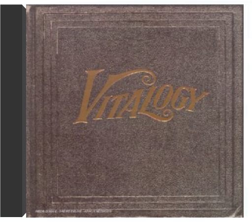
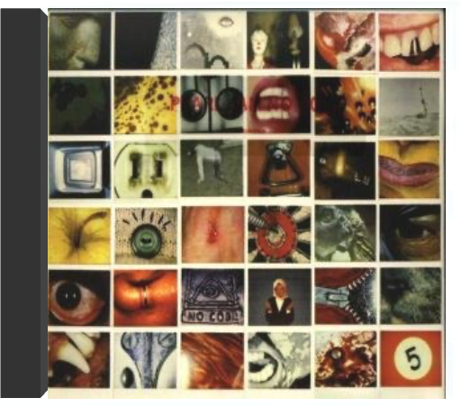
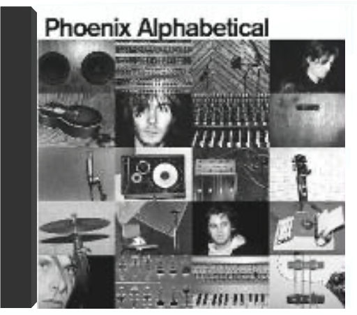

Il ne faudra bien sûr pas un instant penser que le sympathique camélidé qui orne la jaquette donne le ton de ce deuxième album des rois du grunge de Seattle. A ce compte-là, un rhinocéros contrarié eût mieux convenu à la charge frontale que mènent Eddie Vedder et son gang au long de ces trois quarts d'heure de rage et d'électricité. Vedder se montre d'ailleurs remonté comme une horloge et ferait pâlir d'envie les grands hurleurs des groupes heavy metal des 70's (ceux qui ont inspiré le son de Pearl Jam, les Led Zeppelin et autres Black Sabbath). Stone Gossard s'avère un disciple zélé de Tommy Iommi et de Jimmy Page ("Do" ou "Glorified G" contiennent des solos de guitare étourdissants). Pourtant la fureur qui domine, ce tir de barrage rythmique qui cloue au sol, n'empêchent pas les moments de répit ("Daughter") où le groupe rentre les griffes. Après un premier album qui aurait pu faire craindre que Pearl Jam avait tout dit, Vs démontre qu'il commence juste à déchiffrer et à inventer. Des trouvailles vocales ("WMA") des perles mélodiques ("Rearviewmirror", et son faux air à la R.E.M., de même que le très léché ("Elderly Woman Behind The Counter In A Small Town") et une maîtrise générale d'un style que l'on aurait pu craindre épuisé - le grunge - font de ce CD une réussite réjouissante. —José Ruiz  vitalogypearl jam Avec Versus, Pearl Jam n'avait pas totalement réussi à transformer l'essai. Ce deuxième opus n'avait rien de mauvais, mais il n'était tout simplement pas à la hauteur de Ten. Mais voilà, depuis, Vitalogy est sorti. Et, soyons clair, la première écoute fait l'effet d'un uppercut dans la mâchoire ! Pearl Jam s'inscrit dans la lignée de ces groupes qui n'acceptent pas de stagner ni de se répéter. Là où on aurait pu attendre des chansons rock évoluées ou des ballades grunge, Pearl Jam préfère nous balancer un album violent, dur, et noir. Évidemment, tous les morceaux ne sont pas dans la lignée de "Spin The Black Circle", brûlot punk-rock évolué, à base de guitares incisives et de batteries destructrices. On y trouve aussi deux pures merveilles de mélancolie : "Nothing Man" et "Better Man", l'une quasiment opposée à l'autre, et pourtant musicalement si proches. À noter également un "Tremor Christ" de toute beauté, basé sur une guitare répétitive, la basse prenant l'espace laissé libre pour créer sa propre mélodie, nous emmenant ainsi dans un voyage musical éloigné des vulgaires réalités de la vie. —Romaric Bullier  no codepearl jam Quand on pense Pearl Jam, on pense d'abord grunge et scène de Seattle. En se penchant un peu plus sur le cas, on se rend compte de l'originalité du groupe. Quatrième album en date, No Code ne déroge pas à la règle. Pour ceux qui ne connaissaient que Ten, le choc va être rude. Car depuis ce premier album, les cinq de Seattle ont fait du chemin. Ils se sont posés musicalement. Composé et enregistré à la même époque que Mirror Ball de Neil Young, avec les musiciens de Pearl Jam, l'influence est indéniable. Mais ils ont su s'approprier le son du maître et en faire quelquechose de très personnel. Parmi toutes les chansons qui composent No Code, on trouve quelques-unes des plus belles mélodies de Pearl Jam. "In My Tree", tout d'abord, un morceau extrêmement poétique qui démontre encore une fois que le répertoire de Pearl Jam dépasse les limites du rock. Mais surtout, on peut trouver ici "Off He Goes", petite merveilles pop-folk, quelques accords de guitares d'une simplicité et d'une beauté désarmantes. Ne serait-ce que pour ce titre, il faut posséder No Code. —Romaric Bullier  Est-il difficile d'être un des groupes phares de la scène grunge originelle après la mort de Kurt Cobain ? Cette question, Eddie Vedder semble avoir cessé de se la poser. Après une courte période de flottement, il nous offre un des meilleurs albums de Pearl Jam, si ce n'est le meilleur. Car si Yield n'est pas un chef-d'œuvre du rock américain, il en a quand même sacrément l'air. |  Pearl Jam est un des rares groupes issus de lâge dor du grunge de Seattle, à avoir résisté au Nevermind de Nirvana. Aussi intègre que leur mentor Neil Young (quils accompagnent sur lalbum Mirrorball), le quintet carbure au binaire, un binaire envoûtant lardé de riffs bien lourds et de mélodies taciturnes. Pour clore 12 années partagées avec le label Sony, Pearl Jam a exhumé 30 titres rares dont 14 inédits des sessions denregistrement de leurs 7 albums studio – exception faite de Vitalogy. Une sélection non chronologique de leur talents divers et variés jusque-là offerts en cadeaux de Noël aux abonnés de leur fan-club. Un hommage posthume à Layne Staley, chanteur dAlice in Chains, une reprise dHolland & Dozier "Leaving Here", un rap-metal dédié au chauffeur de bus de la tournée avec les Red Hot "Dirty Frank" ou un titre composé pour la BOF de "Dead Man" pimentent cette rétrospective chargée de ballades, mélancolique comme "Strangest Tribe" ou hendrixienne comme "Yellow Ledbetter". Nul besoin dêtre un inconditionnel de Pearl Jam (qui notera labsence dinédit extrait du soundtrack de Singles ou du Ep Merkinball) pour apprécier ce Lost Dogs que personne ne pourra qualifier de fond de tiroir. —Sabrina Silamo  Pearl Jam will release their much-anticipated tenth studio album, Lightning Bolt, on Monkeywrench Records/Republic Records on October 15, 2013 in the US. Produced by Brendan O'Brien, Lightning Bolt marks Pearl Jam's first studio album since the highly acclaimed Backspacer, which was released nearly four years ago in September of 2009.  Meilleur disque seventies sorti en 2000, United consacre ce groupe parisien roi des radios FM californiennes durant la fin des années 70 et le début des années 80, tant ces influences sont ici présentes et bien digérées. Phoenix brille donc de mille feux sur la pop/rock française, non loin de ses amis de Air avec qui la formation partage cet amour des sections rythmiques groovy d'antan tout comme une passion pour les synthés vintage. Le single "Too Young" ici présent est un chef-d'oeuvre de précision et de concision musicale, les harmonies vocales appartenant également au meilleur de la pop de jadis. Grande classe. —Florent Mazzoleni  alphabeticalphoenix Il aura fallu attendre quatre ans pour que les quatre jeunes oiseaux rassemblés sous le nom de Phoenix donnent une suite au prometteur United, sorti en 2000. Quatre ans pour renaître des cendres d’une première tournée internationale qui a visiblement donné des ailes à ce groupe de post-ados, dont les arrangements minutieux, les textes élaborés et les gimmicks stylés dénotent une étonnante maturité. Ce second album creuse la brèche "funky time" ouverte avec United, en évitant toutefois les digressions hard-rock-FM des débuts, ce qui leur permet d’assurer ce coup-ci un album homogène, qui tient de bout en bout son sens du groove efficace sans être facile, accrocheur sans être racoleur. Si le son pop-funk domine l’apparente simplicité de leurs chansons, la rencontre intempestive d’une guitare folk ("Run Run Run"), de rythmiques en contrepoint ("I’m An Actor") et de puissantes lignes de basse n’excluent pas une certaine audace dans l’architecture par ailleurs plutôt classique des morceaux. Avec Alphabetical, vous tenez peut-être l’album que les Daft Punk auraient produit s’ils s’étaient mis à fricoter avec Jamiroquaï plutôt qu’avec Albator… —Stéphanie Lopez |

Julien
Collection Total:
1 901 Items
1 901 Items
Last Updated:
Nov 1, 2021
Nov 1, 2021


 Made with Delicious Library
Made with Delicious Library